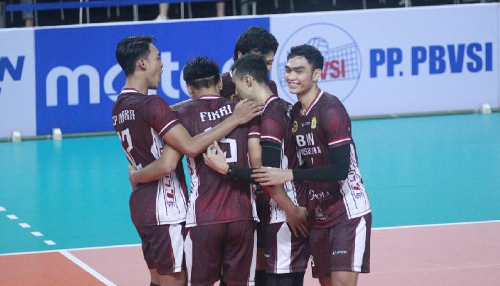

Hasil Livoli Divisi Utama 2023: BIN Pasundan Selangkah Lagi Lolos ke Grand Final, Putri TNI AU Kalah
Tim voli putra BIN Pasundan berhasil mengalahkan tim PDAM Tirta Bhagasasi Bekasi di ajang Livoli Divisi Utama 2023, di GOR Jayabaya, Kediri, Jawa Timur, Minggu, Minggu, 3 Desember. Kemenangan dengan skor 3 -1 ( 21-25, 25-19, 25-21, 25-22) itu membuat mereka tinggal selangkah lagi lolos ke grand final
Baca Selengkapnya